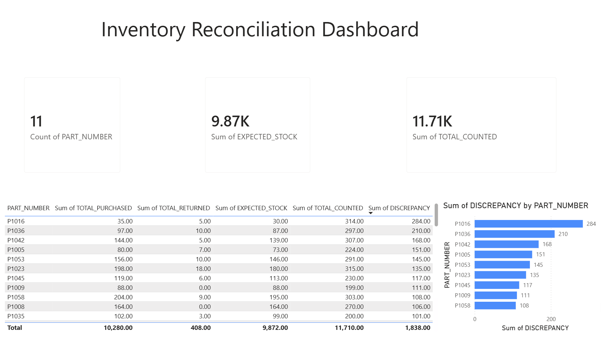
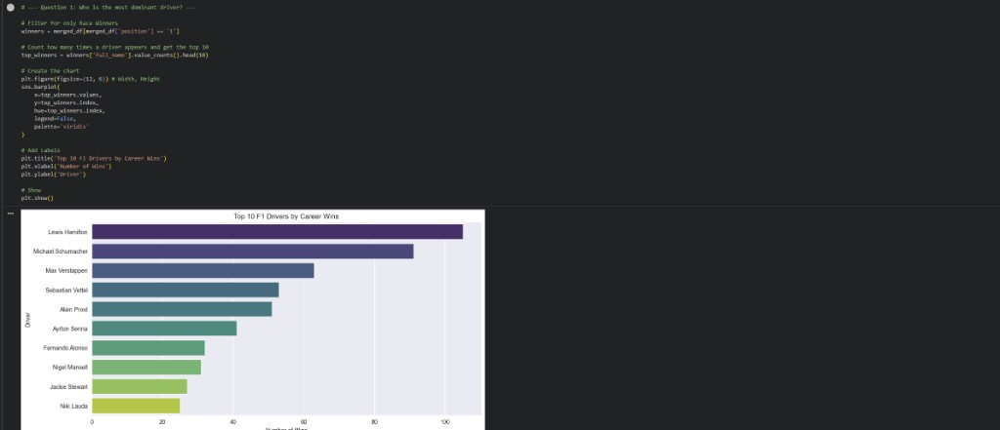
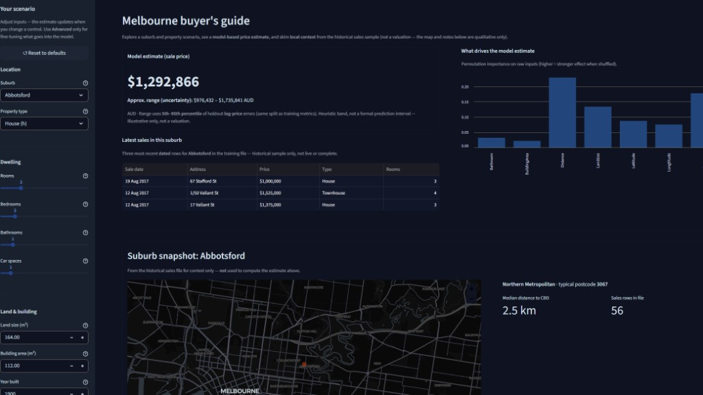

Hi, I'm Rhys Hegyi
Data Science & Computer Science Graduate
Bridging computer science foundations with cloud data engineering and analytics.
About Me
I am a Computer Science and Data Science graduate with a background in logistics and hospitality. Combining formal education in data analysis and software programming with a decade of experience in managing complex operations and regulatory compliance in high-pressure environments.
Education
Graduate Certificate of Data Science
UNSW, Sydney
Data Analysis, Prediction Modeling, Visualisations, Ethics
Bachelor of Computer Science
University of Wollongong
Software Systems, Development Methods, Programming, Databases
Experience
Vehicle Processor
Autocare, Kembla Grange
2023 - PRESENT- Execute daily dispatch protocols by cross-referencing digital vehicle inventory lists
- Built familiarity with data integrity and audit processes
- Perform meticulous damage surveys and visual audits on high-value client and civilian vehicles
Cellarman / Barback
The Illawarra Hotel, Wollongong
2016 - 2023- Coordinated cellar and floor operations during peak business hours for a high volume venue
- Managed stock levels and deliveries to ensure zero operational downtime
- Promoted to Floor Supervisor for proven work ethic and reliability
Technical Skills
Data Engineering & Cloud
Programming Languages
Analytics & Statistics
Tools
Projects

Inventory Reconciliation Data Pipeline
Python |Azure | Databricks | Snowflake | PySpark | Power BI
An end-to-end cloud pipeline that ingests raw inventory data, processes it through distributed compute, and transforms it into a governed, tested data warehouse layer with a business-facing dashboard on top. raw data lands in Azure Blob Storage, is cleaned and reconciled using Databricks and PySpark, flows into Snowflake, and is transformed and tested using dbt before being visualized in Power BI
View Github

Formula 1 Data Analysis
Python | Pandas | Matplotlib | Jupyter
Designed and implemented a Python-based data pipeline to automate the ingestion of complex race data for visual analysis. Integrated data validation and cleaning steps to ensure high data integrity, and created a Jupyter Notebook to enhance the analysis and reporting process.
Open Notebook

House Data Price Prediction
Python | Scikit-Learn | Streamlit | Pandas | Pydantic
Developed a Melbourne property price predictor trained on Kaggle housing data; features include Pydantic input validation, permutation importance visualisation, and an uncertainty-based price range.
View Live App
Get In Touch
Wollongong, NSW
0416 521 148
rhegyi97@gmail.com